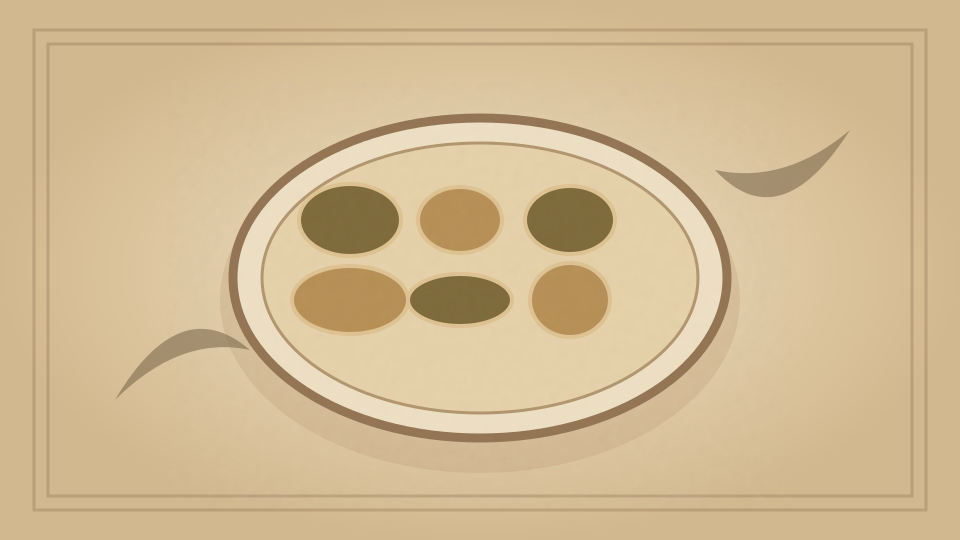

1910 · Fannie Merritt Farmer · BREAD AND BREAD MAKING
Sticks
The Boston Cooking-School Cook Book

Historical Recipe
The following text is extracted from the 1910 edition, retaining historical terminology and quantities.
Original Ingredients & Directions
1 cup scalded milk
¼ cup butter
1½ tablespoons sugar
½ teaspoon salt
1 yeast cake dissolved in
¼ cup lukewarm water
White 1 egg
3¾ cups flour
Add butter, sugar, and salt to milk; when lukewarm, add dissolved yeast cake, white of egg well beaten, and flour. Knead, let rise, shape, let rise again, and start baking in a hot oven, reducing heat, that sticks may be crisp and dry. To shape sticks, first shape as small biscuits, roll on board (where there is no flour) with hands until eight inches in length, keeping of uniform size and rounded ends, which may be done by bringing fingers close to, but not over, ends of sticks.
60 Salad Sticks
Automatically extracted transcription; editorial verification pending. Historical instructions may not meet modern food-safety standards.